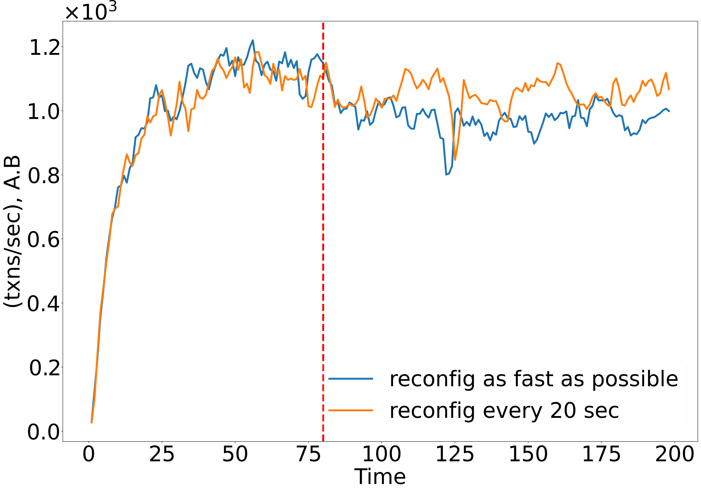
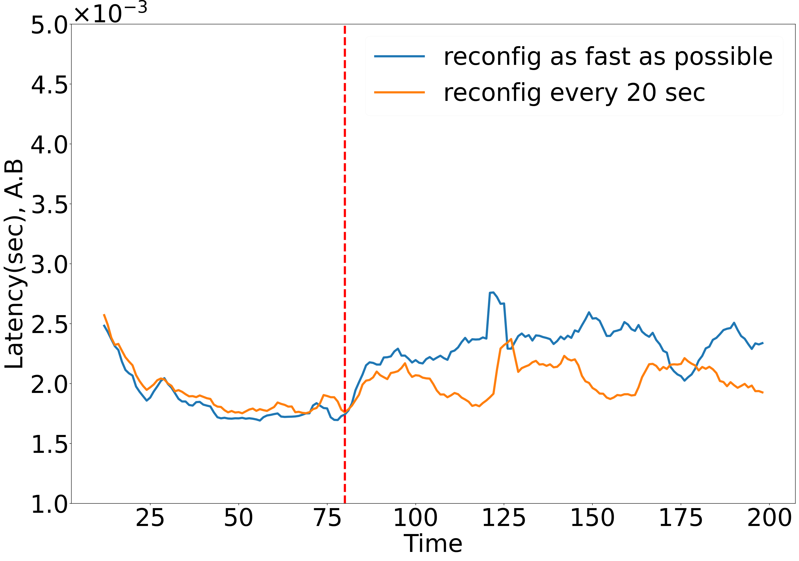
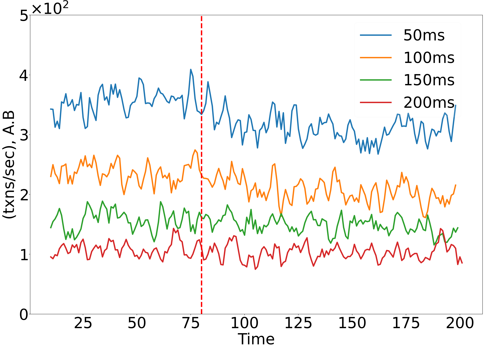
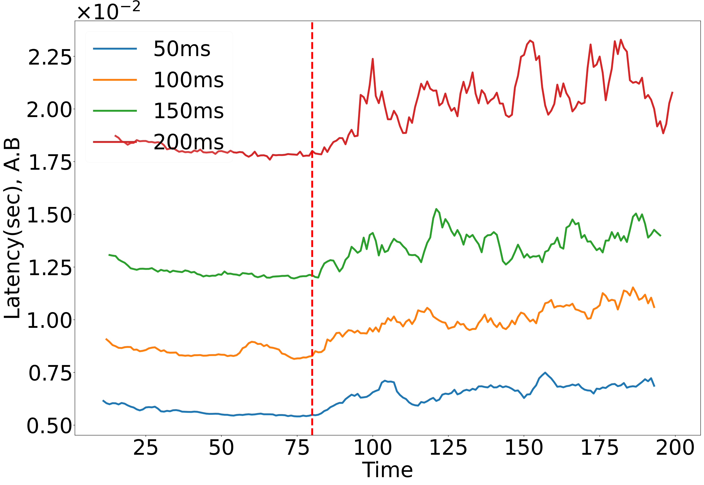

AVA: Fault-tolerant Reconfigurable Geo-Replication
on Heterogeneous Clusters
The Full paper including the appendix is shown below:
Links to the Hotstuff multicluster Updated Git Link
Links to the Bftsmart multicluster Git Link
Impact of reconfiguration frequency


Here, we illustrate the effect of the frequency of reconfigurations on the throughput and latency of Ava-Bftsmart. We experiment on a system with two clusters, where each has 10 replicas, and each has a client that issues transaction requests and another client that issues an increased load of reconfiguration requests. Reconfigurations begin at approximately 80 seconds.
We experiment with two frequencies:
(1) once every 20 seconds, and
(2) continuously, without any delay between reconfiguration requests.
Impact of Network Latency


Here, we experiment on a system with two clusters where each has 10 replicas, and each has a client that issues reconfiguration requests. We fixed one cluster at us-west1-b, and experimented with several locations for the second cluster: us-east5-c, asia-northeast1-b, europe-west3-c, and asia-south1-c, with latencies of 52ms, 91ms, 142ms, and 219ms to the first cluster, respectively.
As the network latency increases, the inter-cluster communication (in phase 2) dominates the performance, and the impact of reconfigurations (in phase 1) diminishes.